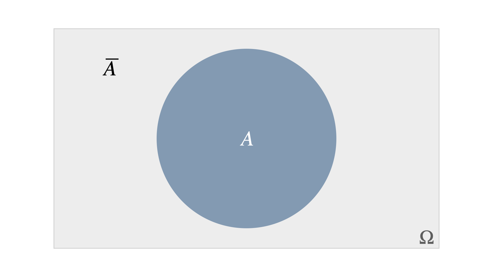
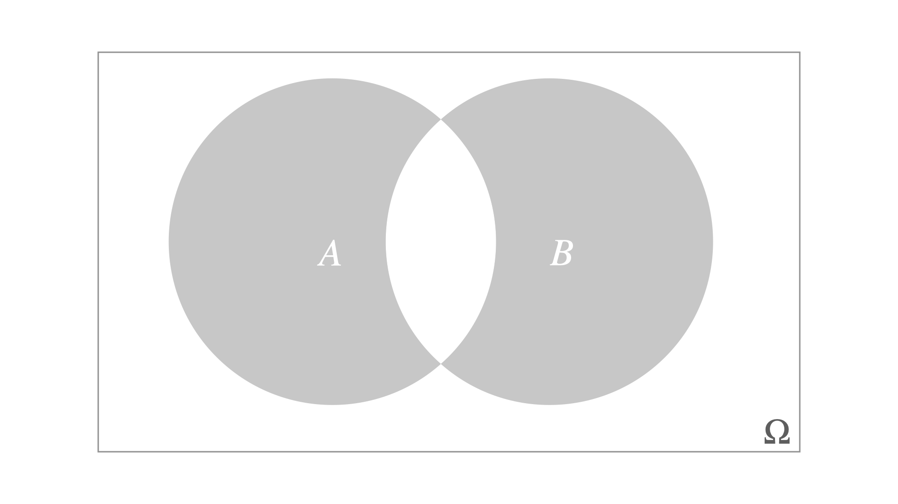
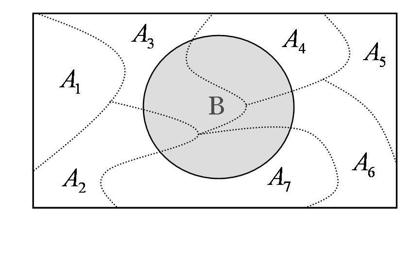

11 Probability Rules
While some probabilities can be determined directly from counting outcomes, others require probability rules that help us break down complex situations. Several fundamental rules govern probability calculations, ensuring consistency and logical reasoning:
- The Complement Rule: If an event \(A\) has probability \(P(A)\), then the probability of \(A\) not occurring is: \[P(\overline{A}) = 1 - P(A)\]
- The Addition Rule: When dealing with the probability of the union of events, we apply: \[P(A \cup B) = P(A) + P(B) - P(A \cap B) \] (For mutually exclusive events, the formula simplifies to \(P(A \cup B) = P(A) + P(B)\).)
-
Conditional Probability: The probability of \(A\) occurring given that \(B\) has already occurred is:
\[P(A \mid B) = \frac{P(A \cap B)}{P(B)}\]
-
Multiplication Rule: The probability of the joint occurrence of two events is: \[P(A \cap B) = P(A) \cdot P(B \mid A)\]
- The Law of Total Probability: If events \(A_1, A_2, \dots, A_k\) form a complete and mutually exclusive partition of the sample space, then the probability of an event \(B\) is given by: \[ P(B) = \sum_{i=1}^{k} P(A_i) \cdot P(B \mid A_i) \]
-
Independence: Two events \(A\) and \(B\) are independent if the occurrence of one does not affect the probability of the other: \[P(A \mid B) = P(A) \quad \text{or equivalently} \quad P(A \cap B) = P(A) P(B)\]
-
Bayes’ Theorem: Used to reverse conditional probabilities, particularly in inference problems:
\[P(A \mid B) = \frac{P(B \mid A) P(A)}{P(B)}\]
We’ll cover these in more details and examples in the following.
11.1 The Complement Rule
he complement rule states that if an event \(A\) has probability \(P(A)\), then the probability that \(A\) does not occur is:
\[P(\overline{A}) = 1 - P(A)\]
This rule is particularly useful when calculating the probability of “at least one” occurrences by considering the opposite event. See Figure 11.1.

Example 11.1: Deck of Cards
Determine the probability of drawing a ♦ (diamond), ♥ (heart), or ♠ (spade) when randomly selecting a card from a standard deck of 52 cards.
Solution
The sample space consists of all 52 cards, so: \(\Omega = \{1, 2, 3, \dots, 52\}\)
Let \(A\) be the event of drawing a ♦, ♥, or ♠. The complement of \(A\), denoted as \(\overline{A}\), is the event of drawing a ♣ (club). Since there are 13 clubs in a deck, the probability of \(\overline{A}\) is:
\[P(\overline{A}) = \frac{13}{52}\]
Using the complement rule we get that: \[P(A) = 1 - P(\overline{A}) = 1 - \frac{13}{52} = \frac{39}{52} = \frac{3}{4}\] Thus, the probability of drawing a ♦, ♥, or ♠ is 3/4 (75%).
11.2 The Addition Rule
The addition rule helps compute the probability of the union of two events (see Figure 11.2):
\[P(A \cup B) = P(A) + P(B) - P(A \cap B)\]

If \(A\) and \(B\) are mutually exclusive (disjoint), then it follows that \[P(A \cup B) = P(A) + P(B)\] since there is no intersection between the two events.
Example 11.2: Dice Roll 🎲
Determine the probability of rolling an even number or a number greater than three when rolling a fair six-sided die.
Solution
The sample space consists of all possible outcomes of a die roll:
\[\Omega = \{1, 2, 3, 4, 5, 6\}\]
Define the events:
-
\(A\) = rolling an even number: \(A = \{2, 4, 6\}\)
-
\(B\) = rolling a number greater than three: \(B = \{4, 5, 6\}\)
- The intersection of these events (\(A \cap B\)) = numbers that are both even and greater than three: \[A \cap B = \{4, 6\}\]
The probabilities are \[P(A) = \frac{3}{6}, \quad P(B) = \frac{3}{6}, \quad P(A \cap B) = \frac{2}{6}\]
Using the addition rule \[P(A \cup B) = P(A) + P(B) - P(A \cap B)\] we get that \[P(A \cup B) = \frac{3}{6} + \frac{3}{6} - \frac{2}{6} = \frac{4}{6} \]
Thus, the probability of rolling either an even number or a number greater than three is \(\frac{4}{6}\) or approximately 0.667 (66.7%).
Example 11.2: Product Defects
In the manufacturing process of a product, two types of defects, \(A\) and \(B\), can occur. Sometimes both defects appear together. We are given the probabilities:
\[P(A) = 0.01, \quad P(B) = 0.02, \quad P(A \cap B) = 0.005\]
a. Determine the probability that a product has at least one of the two defects.
Solution
We are looking for the union of the events \(A\) and \(B\): \[P (A \cup B) = 0.01 + 0.02 − 0.005 = 0.025 = 2.5\%\]
- What is the probability that a product will be defect-free?
Solution
We are looking for the complement of the union of the events \(A\) and \(B\): \[P (\overline{A \cup B}) = 1 − P (A \cup B) = 1 − 0.025 = 0.975 = 97.5\%\]
- What is the probability that a product will have exactly one defect?
Solution
We are looking for the shaded area in Figure 11.3 which is given by \[P(A \cup B) − P (A \cap B) = 0.025 − 0.005 = 0.02 = 2\%\]

11.2.1 The Union of Three or More Events
To compute the probability of the union of three events \(A\), \(B\), and \(C\) as shown in Figure 11.4 we use the generalized addition rule:
\(\qquad \qquad \qquad P(A \cup B \cup C) = P(A) + P(B) + P(C)\)
\[\quad \qquad \qquad - P(A \cap B) - P(A \cap C) - P(B \cap C)\]
\[+P(A \cap B \cap C)\]
This formula ensures that overlapping probabilities are not double-counted when summing individual event probabilities.

To generalize it even further for \(n\) events \(A_1, A_2, \ldots, A_n\), the probability of their union follows the principle of inclusion-exclusion:
\(P\left(\bigcup_{i=1}^{n} A_i \right) = \sum_{i=1}^{n} P(A_i) - \sum_{1 \leq i < j \leq n} P(A_i \cap A_j)\)
\[ \qquad + \sum_{1 \leq i < j < k \leq n} P(A_i \cap A_j \cap A_k) - \dots + (-1)^{n+1} P(A_1 \cap A_2 \cap \dots \cap A_n) \] This pattern continues, alternating between adding and subtracting intersections of increasing size.
11.3 Conditional Probability
Imagine you’re waiting for a pizza delivery. Normally, the probability of the delivery driver being on time (event \(B\)) might not be great. But then you receive a text message saying, “Your order is on the way!” (event \(A\) has occurred). Now that you have extra information, your estimate of \(P(B)\) should change, right? That’s the essence of conditional probability; updating what we know when we gain new insight.
We originally wanted to find the probability of \(B\) happening, i.e., \(P(B)\). But now we’ve been given a game-changing update: \(A\) has happened. That means our world is now limited to the subset of outcomes where \(A\) is true. In other words, we’re no longer looking at the whole sample space \(\Omega\) - our new reality is just \(A\)!
So, the updated probability of \(B\) given that \(A\) has occurred, the so called conditional probability of \(B\) given \(A\), written as \(P(B \mid A)\), is calculated using:
\[
P(B \mid A) = \frac{P(A \cap B)}{P(A)}
\]
where \(P(A) > 0\) (because if \(A\) didn’t happen, there’s no reason to update anything). This formula quantifies how the probability of \(B\) changes when we have additional information that \(A\) has occurred.
Conditional probability is like getting insider information:
- Did your team win the game? If they were leading at halftime, the probability changes.
- Is your package arriving today? If it was shipped yesterday, chances are better.
- Are you likely to pass your exam? If you’ve studied, your odds are much higher!
Example 11.3: Conditional Probability
We are given a population of individuals where:
- 40% are men
- 60% are women
Furthermore, we know that:
- 28% of the population are smokers, of which 8% are male and 20% are female
A person is randomly selected from the population.
We are interested in finding the following conditional probabilities:
What is the probability that the person is a smoker, given that the person is male?
What is the probability that the person is a smoker, given that the person is female?
What is the probability that the person is female, given that the person is a smoker?
We define the following events:
-
\(A\): the person is a woman
-
\(\bar{A}\): the person is a man
-
\(B\): the person is a smoker
- \(\bar{B}\): the person is a non-smoker
and the probabilities given for the events:
- \(P(A) = 0.6\)
- \(P(\bar{A}) = 0.4\)
- \(P(B) = 0.28\)
- \(P(\bar{B}) = 0.72\)
- \(P(A \cap B) = 0.20\)
- \(P(\bar{A} \cap B) = 0.08\)
To help us calculate conditional probabilities, we construct a contingency table that shows joint and marginal probabilities. We fill in the parts given to us:
| Woman (\(A\)) | Man (\(\bar{A}\)) | Total | |
|---|---|---|---|
| Smoker (\(B\)) | 0.20 | 0.08 | 0.28 |
| Non-smoker (\(\bar{B}\)) | ? | ? | 0.72 |
| Total | 0.60 | 0.40 | 1.00 |
To fill in the remaining cells, we use subtraction: \[P(A \cap \bar{B}) = P(A) - P(A \cap B) = 0.60 - 0.20 = 0.40\] \[P(\bar{A} \cap \bar{B}) = P(\bar{A}) - P(\bar{A} \cap B) = 0.40 - 0.08 = 0.32\]
The complete table is then given below:
| Woman (\(A\)) | Man (\(\bar{A}\)) | Total | |
|---|---|---|---|
| Smoker (\(B\)) | 0.20 | 0.08 | 0.28 |
| Non-smoker (\(\bar{B}\)) | 0.40 | 0.32 | 0.72 |
| Total | 0.60 | 0.40 | 1.00 |
With the help of this table, and the equation for conditional probability above, we can now find the asked probabilities (a)–(c).
Solution (a)
- Smoker given man:
\[P(B \mid \bar{A}) = \frac{P(B \cap \bar{A})}{P(\bar{A})} = \frac{0.08}{0.40} = 0.2\] So, the probability that a person is a smoker given that he is a man is 20%.
Solution (b)
Smoker given woman: \[ P(B \mid A) = \frac{P(A \cap B)}{P(A)} = \frac{0.20}{0.60} = \frac{1}{3} \approx 0.333 \]
Solution (c)
Woman given smoker: \[ P(A \mid B) = \frac{P(A \cap B)}{P(B)} = \frac{0.20}{0.28} \approx 0.714 \]
11.4 The Multiplication Rule
From the definition of conditional probability, we can derive what is known as the multiplication rule.
For two events \(A\) and \(B\), the following holds:
\[
P(A \cap B) = P(A) \cdot P(B \mid A)
\]
This rule is particularly useful when determining the joint probability of two events that are not independent.
Example 11.4: Defective Items
Consider a batch of 100 items, out of which 5 are defective.
We randomly select one item from the 100. Then, without replacing the first, we randomly select another from the remaining 99 items.
We want to find the probability that both selected items are defective.
Define the events:
-
\(A\): “The first selected item is defective”
- \(B\): “The second selected item is defective”
We are interested in computing \(P(A \cap B)\) and we know that \(P(A) = \frac{5}{100}\) and \(P(B \mid A) = \frac{4}{99}\) (since one defective item has been removed, 4 defective remain out of 99 items.) Now we apply the multiplication rule: \[P(A \cap B) = P(A) \cdot P(B \mid A) = \frac{5}{100} \cdot \frac{4}{99} = \frac{20}{9900} = \frac{1}{495}\] Alternatively, we could have used combinatorics to solve the problem. Can you see how?
Solution
We want the probability of choosing 2 defective items out of 5, from a total of 100:
\[P(\text{both defective}) = \frac{\binom{5}{2} \cdot \binom{95}{0}}{\binom{100}{2}} = \frac{10 \cdot 1}{4950} = \frac{1}{495}\]
So, both the multiplication rule and combinatorics give us the same result: the probability is \(\frac{1}{495}\)
11.5 Independence
Two events \(A\) and \(B\) are said to be independent if:
\[P(A \cap B) = P(A) \cdot P(B)\]
This also implies:
\[P(A \mid B) = P(A \mid \bar{B}) = P(A)\]
In other words, knowing that \(B\) has occurred (or not) tells us nothing about whether \(A\) will happen. This follows from the definition of conditional probability:
\[P(A \mid B) = \frac{P(A \cap B)}{P(B)} = \frac{P(A) \cdot P(B)}{P(B)} = P(A)\]
Intuition: If you’re flipping a coin, the result of the second flip doesn’t care what happened on the first flip!
Example 11.5: Rolling Dice 🎲
Let’s roll a standard die twice.
- Let \(A\) be “getting a 6 on the first roll”
- Let \(B\) be “getting a 6 on the second roll”
These events are independent, because one roll doesn’t affect the other. This means that \[P(A) = \frac{1}{6} \ \textrm{ and } \ P(B) = \frac{1}{6}\]
Therefore: \[P(\text{6 on both rolls}) = P(A \cap B) = \frac{1}{6} \cdot \frac{1}{6} = \frac{1}{36}\] Note that if \(A\) and \(B\) are independent, then the following events are also indepndent:
- \(A\) and \(\bar{B}\)
- \(\bar{A}\) and \(B\)
- \(\bar{A}\) and \(\bar{B}\)
In other words, independence spreads across complements!
Let’s calculate the probability of not getting a 6 in either roll.
- \(\bar{A}\): Not getting a 6 on the first roll with probability \(P(\bar{A}) = \frac{5}{6}\)
- \(\bar{B}\): Not getting a 6 on the second roll with probability \(P(\bar{B}) = \frac{5}{6}\)
Since they are independent events, the probability of their intersection is given by
\[P(\bar{A} \cap \bar{B}) = \frac{5}{6} \cdot \frac{5}{6} = \frac{25}{36}\]
Note
Don’t confuse independence with mutual exclusivity — they’re very different! Exercises 1 and 2 below illlutrate this.
11.6 The Law of Total Probability
Sometimes, we want to calculate the probability of a complex event \(B\), but it’s hard to compute directly. However, we might know the conditional probabilities of \(B\) given simpler events: \(P(B \mid A_1), P(B \mid A_2), ..., P(B \mid A_k)\)
If \(A_1, A_2, ..., A_k\) are:
-
mutually exclusive: \(A_i \cap A_j = \emptyset\) for \(i \ne j\)
- collectively exhaustive: \(A_1 \cup A_2 \cup \dots \cup A_k = S\)
Then we can piece things together with the Law of Total Probability.
Let \(A_1, A_2, ..., A_k\) be mutually exclusive and collectively exhaustive events. Then:
\[ P(B) = \sum_{i=1}^{k} P(A_i) \cdot P(B \mid A_i) \]
We break down \(B\) based on each case \(A_i\), multiply by the probability of that case, then add them all up. Think of it like calculating total outcomes across different “paths” or scenarios. This is illustrated in Figure 11.5 for \(k=7\).

Example 11.6: Picking Pupils
There are 3 school classes:
- Class 1: 10 boys, 10 girls
- Class 2: 8 boys, 12 girls
- Class 3: 6 boys, 14 girls
A class is chosen at random, then a pupil is picked randomly from that class. What’s the probability the pupil is a girl?
To solve this, we define the following events:
-
\(A_1\) = Class 1
-
\(A_2\) = Class 2
-
\(A_3\) = Class 3
- \(B\) = Student is a girl
Since all classes are equally likely we get the following: \[P(A_1) = P(A_2) = P(A_3) = \frac{1}{3}\]
\[P(B \mid A_1) = \frac{10}{20} = 0.5\] \[P(B \mid A_2) = \frac{12}{20} = 0.6\] \[P(B \mid A_3) = \frac{14}{20} = 0.7\]
Now we apply the law of total probability:
\[ P(B) = \frac{1}{3} \cdot 0.5 + \frac{1}{3} \cdot 0.6 + \frac{1}{3} \cdot 0.7 = \frac{0.5 + 0.6 + 0.7}{3} = \frac{1.8}{3} = 0.6 \]
Thus, there’s a 60% chance the selected pupil is a girl.
Example 11.7: Drawing Balls ⚫⚪
You can also illustrate the law of total probability using tree diagrams, which is used in this example. Assume draw two balls without replacement from a box of 7 black and 10 white balls.
The tree below illustrates the four possible outcomes of the two draws, along with their probabilities.
We clarify each step now. Let:
-
\(A\) = First ball is black
-
\(\bar{A}\) = First ball is white
- \(B\) = Second ball is black
We want to compute \(P(B)\) using total probability. First, we calculate each part:
\[P(A) = \frac{7}{17}\] since 7 out of 17 are black, and the complement is thus \[P(\bar{A}) = \frac{10}{17}\]
If the first is black we have that \(P(B \mid A) = \frac{6}{16}\), and one black is removed. If the first is white \(P(B \mid \bar{A}) = \frac{7}{16}\), and all black balls are still there.
Now apply the law of total probability:
\[ P(B) = P(A) \cdot P(B \mid A) + P(\bar{A}) \cdot P(B \mid \bar{A}) \]
\[ P(B) = \frac{7}{17} \cdot \frac{6}{16} + \frac{10}{17} \cdot \frac{7}{16} \]
Some simplifying leads to: \[ P(B) = \frac{42}{272} + \frac{70}{272} = \frac{112}{272} = \frac{7}{17} \]
The probability of the second ball being black is again \(\frac{7}{17}\); the same as the original proportion of black balls!
11.7 Bayes’ Theorem
Bayes’ Theorem is a fundamental tool in probability theory, especially when we want to reverse the direction of a conditional probability. Suppose we have a collection of events \(A_1, A_2, ..., A_n\) that are mutually exclusive; no two can happen at the same time, and together these events cover the entire sample space. That means one and only one of these events will occur.
Now assume we know the probability of each of these events, \(P(A_1), P(A_2), ..., P(A_n)\), and we also know the conditional probabilities of another event \(B\) given each \(A_i\), that is, \(P(B \mid A_1), ..., P(B \mid A_n)\). Our goal is to compute the probability that \(A_i\) is true given that \(B\) has occurred, written as \(P(A_i \mid B)\).
Bayes’ Theorem gives us exactly this:
\[ P(A_i \mid B) = \frac{P(A_i) \cdot P(B \mid A_i)}{P(B)} \]
The denominator, \(P(B)\), is calculated using the law of total probability:
\[ P(B) = \sum_{i=1}^{k} P(A_i) \cdot P(B \mid A_i) \]
Example 11.8: Genetics and Thumb Length
Imagine a person may or may not carry a certain gene that causes a disease to develop before the age of 40. However, we cannot directly observe whether someone carries the gene. What we can observe is whether they have long thumbs; a trait which appears more often in people who do have the gene.
Let us define the events as follows:
\(A\) is the event that the person has the gene (and will eventually develop the disease), and \(\bar{A}\) is the event that they do not. Let \(B\) be the event that the person has long thumbs, and \(\bar{B}\) that they have short thumbs.
We are given the following probabilities:
The probability that someone carries the gene is \(P(A) = 0.01\). Among those who carry the gene, 90% have long thumbs, so \(P(B \mid A) = 0.9\). For those who do not carry the gene, 40% have long thumbs, meaning \(P(B \mid \bar{A}) = 0.4\).
Now, imagine someone is 16 years old and notices they have long thumbs. What is the probability that they carry the gene for the disease?
We want to compute \(P(A \mid B)\), the probability that someone has the gene, given they have long thumbs. Using Bayes’ Theorem, we write:
\[ P(A \mid B) = \frac{P(A) \cdot P(B \mid A)}{P(A) \cdot P(B \mid A) + P(\bar{A}) \cdot P(B \mid \bar{A})} \]
Substituting the known values:
- \(P(A) \cdot P(B \mid A) = 0.01 \cdot 0.9 = 0.009\)
- \(P(\bar{A}) \cdot P(B \mid \bar{A}) = 0.99 \cdot 0.4 = 0.396\)
- \(P(B) = 0.009 + 0.396 = 0.405\)
Thus,
\[ P(A \mid B) = \frac{0.009}{0.405} \approx 0.0222 \]
This tells us that the probability a person with long thumbs carries the disease gene is about 2.2%.
Example 11.9: FInding the Toilet
Now let’s turn to a more lighthearted but equally instructive example. Imagine you are at a party in a large, unfamiliar house. You’re searching for the toilet, which we’ll call \(T\). You see three doors in front of you, each leading to a different room: \(R_1\), \(R_2\), and \(R_3\). You don’t know which one to pick, so you choose randomly.
Once inside one of these rooms, you find several doors. In room \(R_1\), there are two more doors, one of which leads to the bathroom. In \(R_2\), there are four doors, again only one of which leads to \(T\). In \(R_3\), three doors are present, and two of them lead to \(T\).
You may only move forward, that is, you pick one of the three initial rooms and then try one of its doors.
- What is the probability that you reach the bathroom?
Solution
Since you choose one of the three rooms at random, the probability of entering any specific room is \(1/3\). Given the room, the conditional probabilities of finding the bathroom are:
-
\(P(T \mid R_1) = 1/2\)
-
\(P(T \mid R_2) = 1/4\)
- \(P(T \mid R_3) = 2/3\)
Using the law of total probability, we compute:
\[ P(T) = \frac{1}{3} \cdot \frac{1}{2} + \frac{1}{3} \cdot \frac{1}{4} + \frac{1}{3} \cdot \frac{2}{3} = \frac{1}{6} + \frac{1}{12} + \frac{2}{9} = \frac{6}{36} + \frac{3}{36} + \frac{8}{36} = \frac{17}{36} \approx 0.472 \]
So you have approximately a 47.2% chance of finding the bathroom.
- You found the bathroom, but which room did you use?
Solution
Let’s now suppose you did find the bathroom but forgot which room you entered first. What’s the probability you entered through say room \(R_2\)?
This is another great application of Bayes’ Theorem. We now want \(P(R_2 \mid T)\), the probability that you passed through \(R_2\) given that you found the bathroom.
According to Bayes’ Theorem:
\[ P(R_2 \mid T) = \frac{P(R_2) \cdot P(T \mid R_2)}{P(T)} = \frac{\frac{1}{3} \cdot \frac{1}{4}}{\frac{17}{36}} = \frac{1}{12} \cdot \frac{36}{17} = \frac{3}{17} \approx 0.176 \]
So there’s about a 17.6% chance that your successful journey to the bathroom started through \(R_2\). Similarly: \[ P(R_1 \mid T) = \frac{P(R_1) \cdot P(T \mid R_1)}{P(T)} = \frac{\frac{1}{3} \cdot \frac{1}{2}}{\frac{17}{36}} = \frac{1}{6} \cdot \frac{36}{17} = \frac{6}{17} \approx 0.353 \] and \[ P(R_3 \mid T) = \frac{P(R_3) \cdot P(T \mid R_3)}{P(T)} = \frac{\frac{1}{3} \cdot \frac{2}{3}}{\frac{17}{36}} = \frac{2}{9} \cdot \frac{36}{17} = \frac{8}{17} \approx 0.471 \]
Exercises
- The probability of two events \(A\) and \(B\) are given by \(P(A) = 0.5\) and \(P(B) = 0.2\). What’s \(P(A \cap B)\) if
\(A\) and \(B\) are mutually exclusive events
\(A\) and \(B\) are independent events
Solution
If \(A\) and \(B\) can’t happen together, then \(P(A \cap B) = \emptyset = 0\).
If \(A\) and \(B\) are independent, then \(P(A \cap B) = P(A) \cdot P(B) = 0.5 \cdot 0.2 = 0.1\).
- The probability of two events \(A\) and \(B\) are given by \(P(A) = 0.5\) and \(P(B) = 0.2\). What is \(P(A \cup B)\), the probability that at least one happens, if
\(A\) and \(B\) are mutually exclusive events
\(A\) and \(B\) are independent events
Solution
If \(A\) and \(B\) are mutually exclusive events, then \(P(A \cup B) = P(A) + P(B) - P(A \cap B) = 0.5 + 0.2 - 0 = 0.7\).
If \(A\) and \(B\) are independent, then \(P(A \cup B) = 0.5 + 0.2 - 0.1 = 0.6\).
- Assume we know the following: \(P(A) = 0.6\), \(P(A \mid B) = 0.75\), \(P(B \mid A) = 0.5\). What is the probability that \(B\) will happen?
Solution
Find \(P(A \cap B)\) using the conditional probability rule:
\[P(A \cap B) = P(A) \cdot P(B \mid A) = 0.6 \cdot 0.5 = 0.3\]
Then use the definition of conditional probability:
\[P(B) = \frac{P(A \cap B)}{P(A \mid B)} = \frac{0.3}{0.75} = 0.4\]
- Anna and Bob go downhill skiing. The probability that Anna falls is \(1/2\), while the probability that Bob falls is \(1/3\). The probability that both fall is \(1/4\). What is the probability that both make it safely down the slope?
Solution
Let:
- \(A\) = Anna falls
- \(B\) = Bob falls
We want the probability that both Anna and Bob make it down the slope safely \[P(\bar{A} \cap \bar{B}) = P(\overline{A \cup B}) = 1 - P(A \cup B)\]
\[P(\bar{A} \cap \bar{B}) = 1 - P(A \cup B) = 1 - [P(A) + P(B) - P(A \cap B)] \] \[ = 1 - \left(\frac{1}{2} + \frac{1}{3} - \frac{1}{4}\right) = \frac{5}{12}\]
- A tech company has found that:
- 40% of its users are premium members (\(P(M) = 0.4\))
- 80% of premium users log in daily (\(P(D \mid M) = 0.8\))
What is the probability that a randomly chosen user is a premium member who logs in daily?
Solution
Using the mnultiplication rule, we get that
\[ P(M \cap D) = P(M) \cdot P(D \mid M) \]
Substitute the values:
\[ P(M \cap D) = 0.4 \cdot 0.8 = 0.32 \]
Thus 32% of users are both premium and daily-active.
- In a survey of 300 students:
- 180 said they drink coffee
- 150 said they drink tea
- 60 said they drink both coffee and tea
What is the probability that a randomly chosen student drinks coffee (\(C\)) or tea (\(T\))?
Solution
We are seeking \(P(C \cup T)\): the probability that a student drinks coffee OR tea. We can use the addition rule:
\[ P(C \cup T) = P(C) + P(T) - P(C \cap T) \]
First we convert counts into probabilities:
-
\(P(C) = \frac{180}{300} = 0.6\)
-
\(P(T) = \frac{150}{300} = 0.5\)
- \(P(C \cap T) = \frac{60}{300} = 0.2\)
Then apply the rule:
\[ P(C \cup T) = 0.6 + 0.5 - 0.2 = 0.9 \]
Thus 90% of students drink either coffee, tea, or both.
- A machine learning model classifies emails as spam or not spam. Based on past data we know the following:
- 10% of all emails are actually spam: \(P(S) = 0.10\)
- 90% of emails are not spam: \(P(\bar{S}) = 0.90\)
- The model correctly detects spam 95% of the time: \(P(D \mid S) = 0.95\)
- The model incorrectly flags 5% of non-spam as spam: \(P(D \mid \bar{S}) = 0.05\)
You receive an email that was flagged by the model as spam (i.e., it was detected as spam).
What is the probability that it is actually spam?
That is, compute \(P(S \mid D)\), where:
- \(S\): Email is spam
- \(D\): Email was detected as spam by the filter
Solution
We apply Bayes’ Theorem: \[ P(S \mid D) = \frac{P(S) \cdot P(D \mid S)}{P(S) \cdot P(D \mid S) + P(\bar{S}) \cdot P(D \mid \bar{S})} \]
Plug in the values to get
- Numerator: \(0.10 \cdot 0.95 = 0.095\)
- Denominator: \(0.10 \cdot 0.95 + 0.90 \cdot 0.05 = 0.095 + 0.045 = 0.14\)
Thus: \[ P(S \mid D) = \frac{0.095}{0.14} \approx 0.679 \] There is a 67.9% chance the email is actually spam.